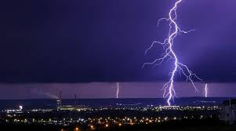

METEO / April 01, 2023
Temperaturi ridicate și furtuni puternice în sudul țării.
CITESTE MAI MULT [...]
În sudul României, vremea se anunță a fi călduroasă în următoarele zile, cu temperaturi care vor depăși frecvent 30 de grade Celsius. În special în zonele de câmpie și coline, indicele de temperatură și umiditate (ITU) va fi ridicat, ceea ce poate duce la disconfort termic pentru persoanele sensibile.
Pe de altă parte, în zona montană din sudul țării, mai precis în Carpații Meridionali, se vor forma nori de furtună, care pot aduce averse puternice, grindină și descărcări electrice. Aceste fenomene pot fi periculoase, mai ales pentru cei care se află în zonele deschise sau pe crestele montane.
Potrivit meteorologilor, fenomenele meteorologice extreme din ultimele săptămâni, cum ar fi furtunile puternice, ploile abundente și canicula, sunt cauzate de o masă de aer cald și umed care a ajuns în România din regiunea Mediterană. Această masă de aer aduce în continuare instabilitate atmosferică, ceea ce poate duce la apariția de furtuni, ploi și vânt puternic.